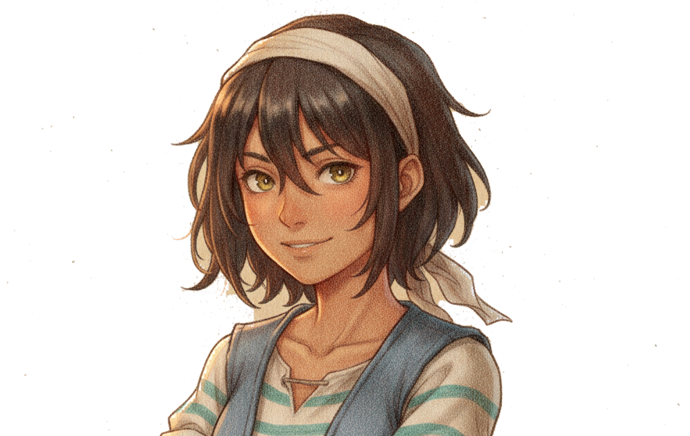
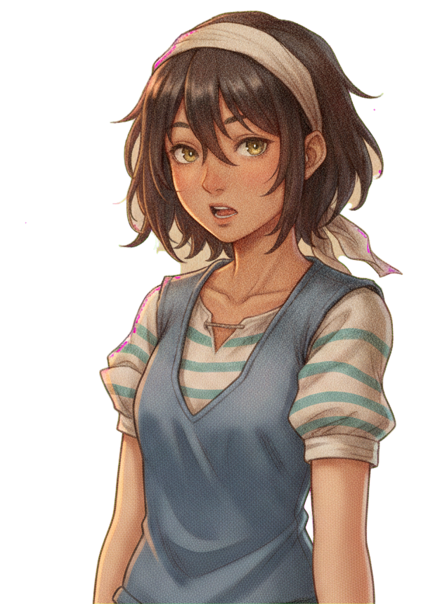
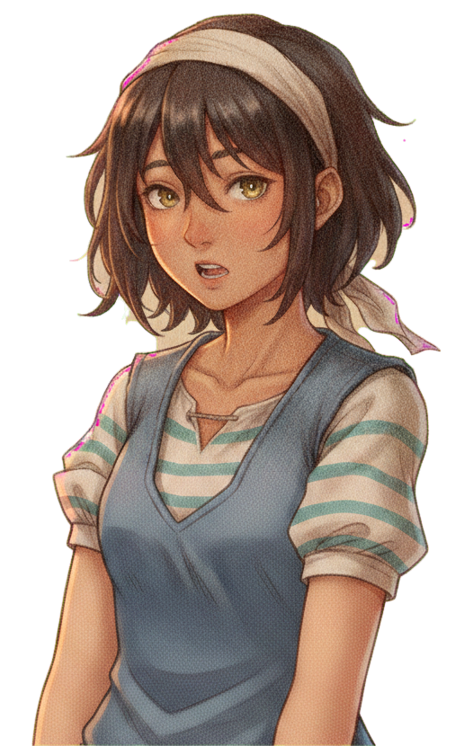
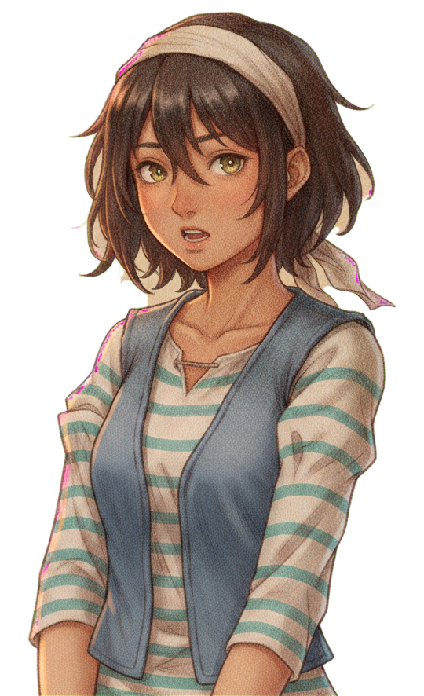

No redesign for Maren: these candidates outpaint her shipped likeness down to the waist on the key (the proven 0.52 composite recipe) with her characterful rest face — mid-thought, brows up, about to talk. The pick becomes the reference every pose roll and mood plate starts from.




Sizing is the game's own: uniform portrait height, bottom sunk behind the dialogue box exactly as dialogue.js places it. The base carries the personality — it is the quiet baseline every emotion jumps from, and the reference every future roll copies.